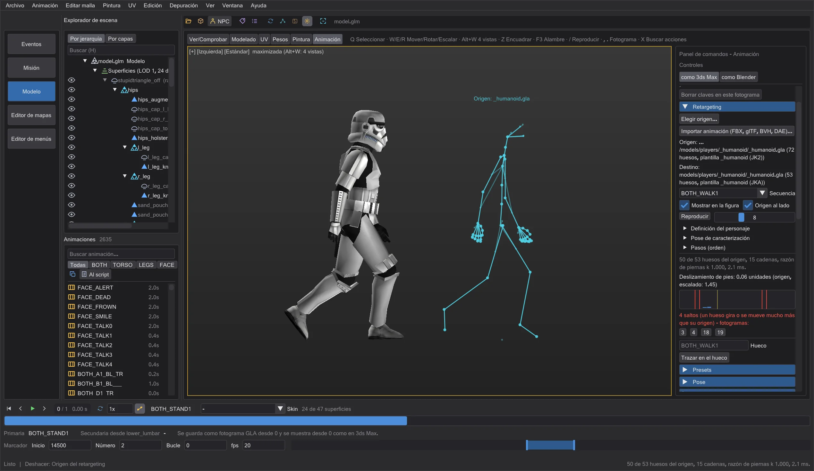
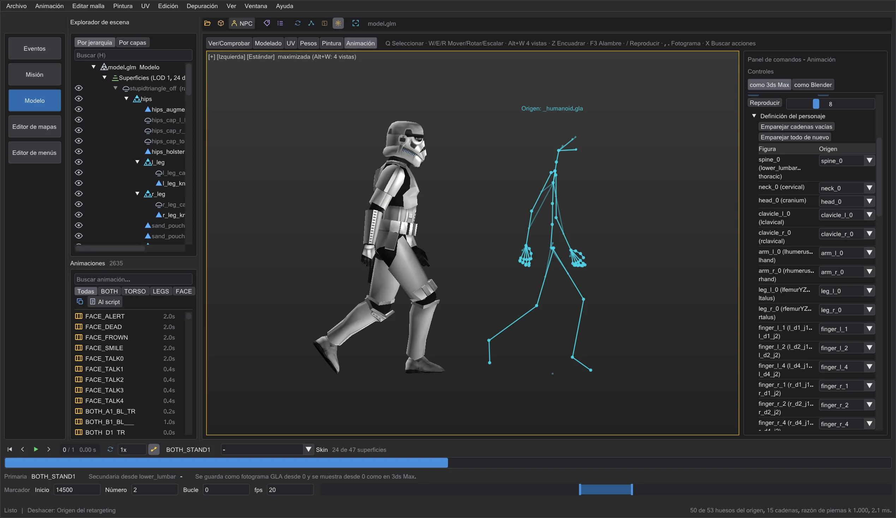
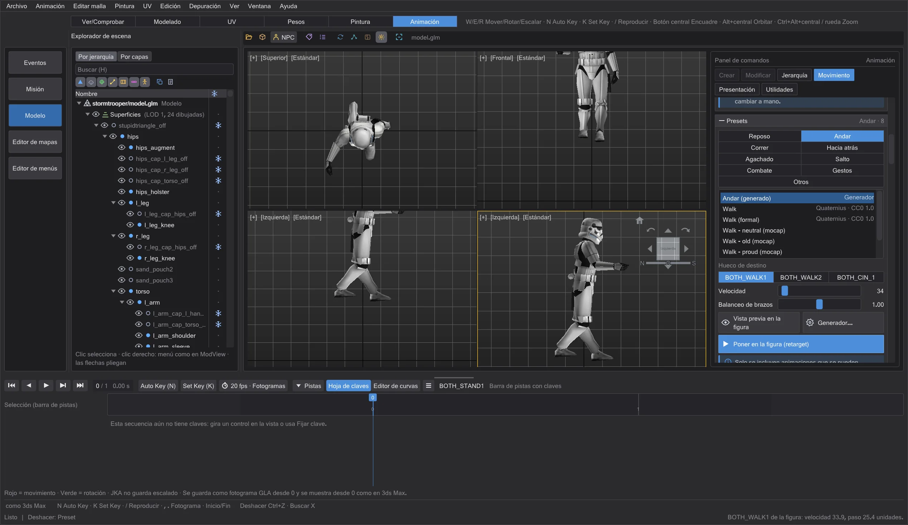

Pestaña Model: retargeting
Da a tu figura la animación de otro esqueleto (JK2 a JKA, JKA a una figura de Movie Duels, un paso humano a una criatura o a tu propio rig) con la misma pose, cadenas emparejadas, pasos escalados, pies firmes y el resultado horneado en el GLA que elijas.
Elegir el origen#
Abre tu figura en la pestaña Model y ve al área Animation. En el panel Retargeting del panel de comandos (bajo Física automática), en el menú Animation > Retargeting, en el clic derecho de la vista (Control Rig > Retargeting) o en la búsqueda (X, F3 en modo Blender) elige Elegir origen: cualquier GLA de los datos del juego o un .gla del disco. Después la Secuencia del origen (una línea de su animation.cfg). Transferir muestra el resultado al instante en tu figura y el origen como esqueleto al lado; Reproducir reproduce ambos a la vez. La figura muestra el resultado empaquetado como el juego (compressBone): lo que ves es lo que reproduce el juego.

Cadenas y plantillas de rig#
Ambos esqueletos se describen con cadenas: columna, cuello, cabeza, clavículas, brazos (brazo, antebrazo, mano), piernas (muslo, pierna, pie, dedos del pie), dedos y apéndices. En modo 3ds Max la tabla se llama Definición del personaje (como en MotionBuilder), en modo Blender Mapeo de huesos. Se rellena con una plantilla si el esqueleto es conocido: JKA _humanoid (53 huesos), JK2 _humanoid (72), los 34 esqueletos propios del juego base (rancor, wampa, AT-ST, howler, tauntaun, droide de protocolo y todos los demás, reconocidos por nombre de archivo y de huesos) y, para rigs de otros programas, HumanIK/Mixamo (mixamorig:...), Biped de 3ds Max y CAT. Cualquier otro esqueleto recibe cadenas sugeridas por el reconocimiento de huesos. Las cadenas del mismo nombre se emparejan; un número distinto de huesos se reparte a lo largo de la cadena, los dedos por su número. Cambia cualquier fila a mano (lleva un *); Emparejar cadenas vacías mantiene tus filas. Los huesos de giro (lhumerusX, lradiusX, lfemurX) toman su parte del giro del antebrazo o del muslo; los dedos y la etiqueta del sable que cuelgan del antebrazo siguen a la mano. No se incluyen archivos de Mixamo: descárgalos tú con tu cuenta, la plantilla los empareja.
La pose común#
Antes de transferir, origen y figura deben estar en la misma pose (Pose de caracterización en modo 3ds Max, Pose de reposo en modo Blender); si no, brazos y piernas salen retorcidos. El esqueleto de JKA está en pose A (brazos unos 48° hacia abajo), otros rigs a menudo en pose T. Pose T y Pose A ponen columna y cuello rectos, los brazos a los lados o 45° hacia abajo y las piernas rectas hacia abajo, cada miembro con el giro mínimo. El panel muestra cuánto difieren aún las dos poses. Ajusta un hueso de la figura con los botones X/Y/Z ±5, guarda el par con un nombre y úsalo más tarde.
Pelvis, FK, IK, raíz#
Los pasos se ejecutan en el orden de la lista, como en Unreal: Pelvis mueve la pelvis como el origen, escalada por k = longitud de pierna de la figura / del origen: piernas más largas dan pasos más largos y los pies no resbalan; Cadenas FK gira cada hueso como su hueso de origen respecto a la pose común, las longitudes son las de tu figura; IK manos/pies lleva manos y pies a los lugares escalados del origen (Reach pies y Reach manos de 0 = solo FK a 1 = exactamente ahí, como Reach en HumanIK); Mantener contactos de los pies mantiene un pie donde apoyó mientras el pie del origen está apoyado; Movimiento raíz mueve model_root y Motion como el origen, escalados. Con las flechas cambias el orden. Con k a mano obtienes otra zancada.

Comprobar y hornear#
Bajo los pasos el panel mide el resultado: el deslizamiento de pies es el mayor recorrido horizontal de un pie mientras está apoyado, en unidades del juego, junto al mismo valor del origen (escalado); las barras lo muestran por fotograma. Los saltos son fotogramas en los que un hueso de la figura gira o se mueve mucho más que su origen: haz clic en el número para verlo. Trazar en el hueco (en modo Blender Hornear en el hueco) empaqueta los fotogramas como el juego con los fps del animation.cfg del origen y los pone en un Hueco (BOTH_WALK1, BOTH_CIN_3 ...). En GLA y huecos creas luego el GLA de mapa (cinemáticas, BOTH_CIN_1...), el _humanoid.gla de tu mod o un GLA propio; un GLA propio con esqueleto nuevo solo lo carga el modo de un jugador. La animación propia de la figura y su GLA horneado quedan byte a byte como antes al desactivar la vista previa.
Presets: generador de andar y correr#
El panel Presets (también en el menú Animation > Presets y en la búsqueda) crea ciclos de andar y correr con nuestro propio generador, así que no hay cuestión de licencia: elige Categoría y Postura (normal, pesada, sigilosa, herida, sable desenvainado), ajusta Velocidad (los NPC del juego andan a 90 y corren a 300 unidades por segundo), Longitud de paso (medida en el BOTH_WALK1 / BOTH_RUN1 propio de la figura), balanceo de brazos y cadera y altura del pie, y luego Poner en la figura. El ciclo se reproduce al instante en la figura; el pie de apoyo queda justo en el suelo y se desliza uniformemente hacia atrás como los pasos del juego (el juego mueve la figura), el ciclo cierra sin costura y la pelvis baja donde ambos pies deben llegar al suelo. Hornéalo como una animación transferida en el hueco BOTH_WALK1 o BOTH_RUN1. Aún no se incluyen bibliotecas de otros autores: la Quaternius Universal Animation Library (CC0) y el conjunto 100STYLE (Ian Mason, CC BY 4.0) necesitarían importar sus formatos (glTF/FBX y BVH); ver las notas de la versión.
